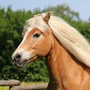
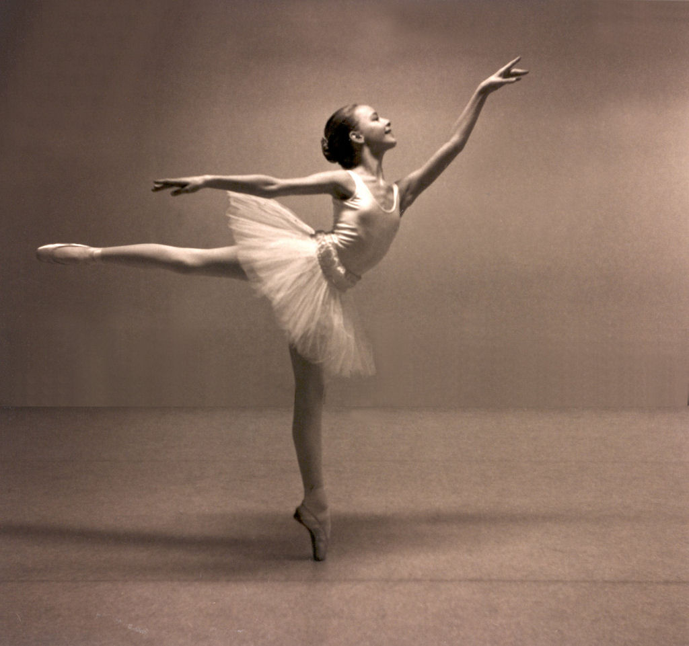
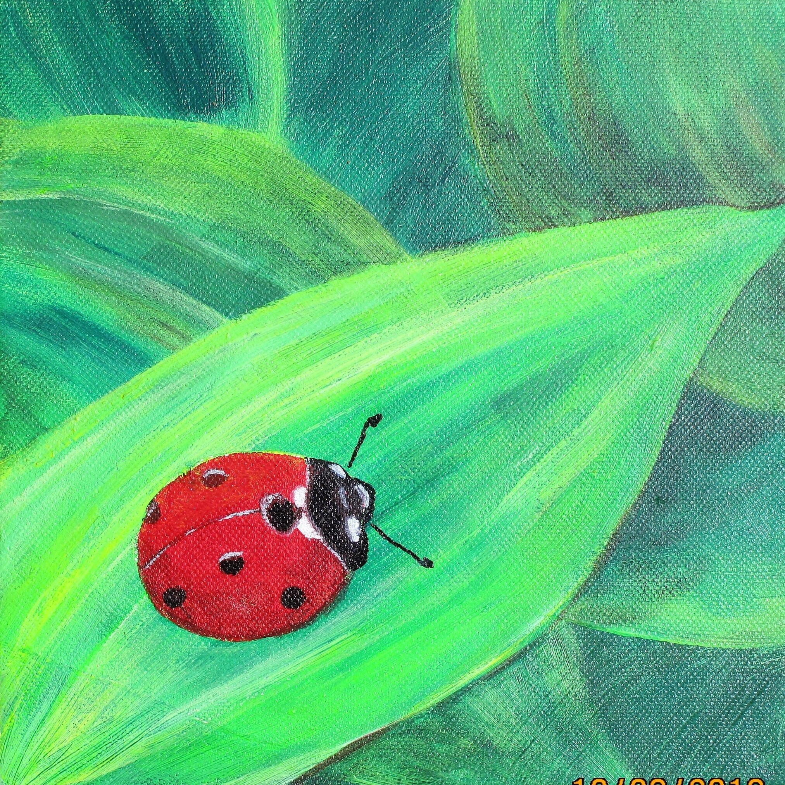
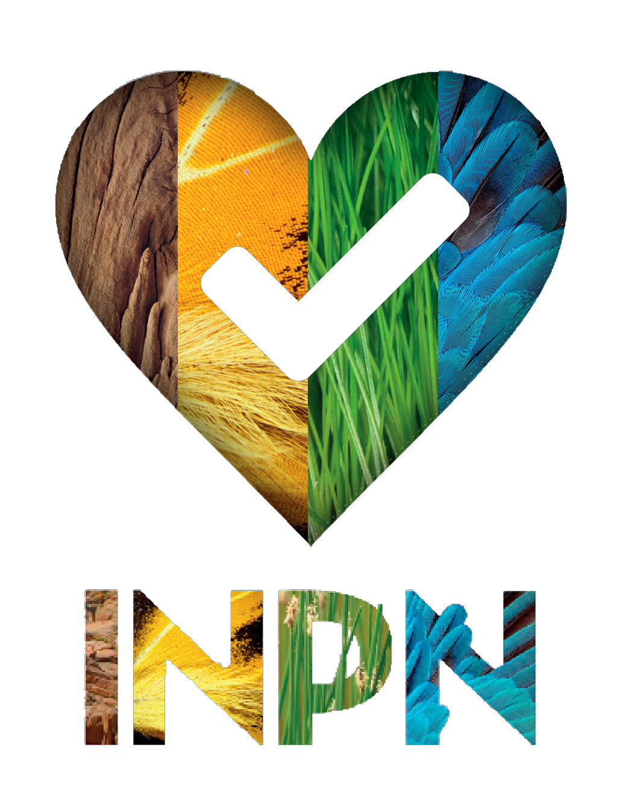
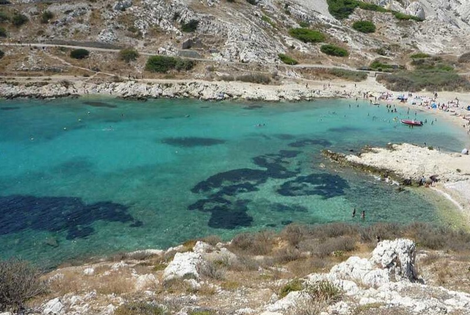

Célia CHANUT

Je suis passionnée par les motos et la politique. J'étudie à l'ESSEC, en Ile-de-France.
Mon école de commerce : l'ESSECMes centres d'intérêts :
- Sports
- Activités artistiques
- Cinéma
- Voyages et Nature
J'ai pratiqué l'équitation - à travers toutes ses disciplines - et la danse (orientale, modern, jazz, ...) respectivement pendant 10 et 8 ans. En classe de seconde, j'ai découvert le yoga, discipline que je poursuis à l'ESSEC. L'école propose des formules bien-être, notamment des séances sophrologie auxquelles je participe.
 Dès mon plus jeune âge, je me suis adonnée aux activités manuelles : peinture, quirling, couture, sculpture.
Pendant mes années lycée, j'ai participé à l'atelier cinéma organisé par mon établissement. Dans ce cadre, nous avons - avec mon équipe de choc - écrit, réalisé, joué et monté 2 courts-métrages, le premier en 2021 et le deuxième en 2022, en partenariat avec l'association De l'Ecrit à l'Ecran. Cette association cinématographique organise chaque année un festival en Drôme-Ardèche. J'ai eu l'honneur d'être ambassadrice de ce festival en 2021 en ayant pour mission de faire connaître ce festival auprès du public des 16-25 ans. De plus, en partenariat avec l'association, nous avons - avec mon équipe de choc - écrit, réalisé, joué et monté 2 courts-métrages, le premier en 2021 et le deuxième en 2022. Cette même année, mon lycée a été sélectionné pour faire parti du Jury jeune César des lycéens, organisé par le Ministère de l'Education nationale et de l'Académie des Arts et Techniques du cinéma.

Je suis passionnée par les voyages, notamment en Europe ainsi que par la faune et la flore qui la composent. J'apprécie particulièrement découvrir de nouvelles espèces. Pour m'accompagner dans cette démarche, j'ai téléchargé l'application de l'INPN (Inventaire National du Patrimoine Naturel) qui permet de recenser l'écosystème qui nous entoure. Cette application contribue à aider les études des scientifiques. A mon niveau, je participe à l'inventaire de la biodiversité du département de la Drôme.
Ma formation :
- Cycle primaire
- Cycle secondaire
- Etudes supérieures
J'ai suivi un parcours scolaire atypique et singulier. Pendant mes années de maternelle, j'ai été scolarisée à l'école internationale de Marseille, dans un environnement multiculturel. Puis nous avons déménagé en Drôme et j'ai intégré le collège Chabrillan à Montélimar. J'ai réalisé deux échanges scolaires en Allemagne au Humbolt Gymnasium à Berlin dans le cadre du programme Brigitte Sauzay. Le collège a été aussi l'occasion pour moi de suivre l'école à la maison - période durant laquelle mes enseignements ont été dispensés par ma famille ainsi que des professeurs de langue.

J'ai suivi mes années lycée au sein du lycée Alain Borne à Montélimar.

Actuellement, j'étudie au sein de l'école de commerce ESSEC à Cergy-Pontoise, où je suis le programme GBBA.